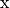

predictors#
base#
Fixed and learning predictors for supervised learning applications.
- class stats_learn.predictors.base.Base(loss_func, space=None, proc_funcs=(), name=None)#
Bases:
ABCBase class for supervised learning predictors.
- Parameters:
loss_func (callable) –
space (dict, optional) – The domain for  and
 . Defaults to the model’s space.
. Defaults to the model’s space.proc_funcs (Collection of callable of dict of Collection of callable) – Sequentially-invoked preprocessing functions for
 and values.
and values.name (str, optional) –
- data_assess(d_train=None, d_test=None, params=None, x=None, verbose=False, plot_fit=False, log_path=None, img_path=None, ax=None)#
Assess predictor using a single dataset.
- Parameters:
d_train (array_like, optional) – Training data.
d_test (array_like, optional) – Testing data.
params (dict, optional) – Predictor parameters to evaluate. Outer product of each parameter array is assessed.
x (array_like, optional) – Values of observed element to use for assessment of prediction statistics.
verbose (bool, optional) – Enables iteration print-out.
plot_fit (bool, optional) – Enables plotting of fit predictors.
log_path (os.PathLike or str, optional) – File for saving printed loss table and image path in Markdown format.
img_path (os.PathLike or str, optional) – Directory for saving generated images.
ax (matplotlib.axes.Axes, optional) – Axes onto which stats/losses are plotted.
- Returns:
Empirical risk values for each parameterization.
- Return type:
list of ndarray
- property dtype#
- evaluate(d)#
Evaluate predictor using test data.
- Parameters:
d (np.ndarray) – The test data.
- Returns:
Empirical risk (i.e. average test loss).
- Return type:
float
- evaluate_from_model(model, n_test=1, n_mc=1, rng=None)#
Evaluate predictor using test data randomly drawn from a given data model.
- Parameters:
model (stats_learn.random.models.Base) – Model for training data generation.
n_test (int, optional) – Number of test samples.
n_mc (int, optional) – Number of Monte Carlo simulation iterations.
rng (int or np.random.RandomState or np.random.Generator, optional) – Random number generator seed or object.
- Returns:
Empirical risk (i.e. average test loss).
- Return type:
float
- fit(d=None, warm_start=False)#
Refine the learning model using observations.
- Parameters:
d (np.ndarray, optional) – The training data.
warm_start (bool, optional) – If False, reset is invoked to restore unfit state.
- fit_from_model(model, n_train=0, warm_start=False, rng=None)#
Refine the learning model using data randomly drawn from a model.
- Parameters:
model (stats_learn.random.models.Base) – Model for training data generation.
n_train (int, optional) – Number of training samples.
warm_start (bool, optional) – If False, reset is invoked to restore unfit state.
rng (int or np.random.RandomState or np.random.Generator, optional) – Random number generator seed or object.
- model_assess(model=None, params=None, n_train=0, n_test=0, n_mc=1, x=None, stats=None, verbose=False, plot_stats=False, plot_loss=False, print_loss=False, log_path=None, img_path=None, ax=None, rng=None)#
Assess predictor using Monte Carlo simulation of prediction statistics and empirical risk.
- Parameters:
model (stats_learn.random.models.Base or stats_learn.bayes.models.Base) – Data-generating model.
params (Collection of dict, optional) – Predictor parameters to evaluate. Outer product of each parameter array is assessed.
n_train (int or Collection of int, optional) – Training data volume.
n_test (int, optional) – Test data volume.
n_mc (int, optional) – Number of Monte Carlo simulation iterations.
x (array_like, optional) – Values of observed element to use for assessment of prediction statistics.
stats (Collection of str, optional) – Names of the statistics to generate, e.g. ‘mean’, ‘std’, ‘cov’, ‘mode’, etc.
verbose (bool, optional) – Enables iteration print-out.
plot_stats (bool, optional) – Enables plotting of prediction statistics.
plot_loss (bool, optional) – Enables plotting of average loss.
print_loss (bool, optional) – Enables print-out of average loss table.
log_path (os.PathLike or str, optional) – File for saving printed loss table and image path in Markdown format.
img_path (os.PathLike or str, optional) – Directory for saving generated images.
ax (matplotlib.axes.Axes, optional) – Axes onto which stats/losses are plotted.
rng (int or np.random.RandomState or np.random.Generator, optional) – Random number generator seed or object.
- Returns:
ndarray – Prediction statistics for each parameterization.
ndarray – Empirical risk values for each parameterization.
- property ndim#
- plot_predict(x=None, ax=None, label=None)#
Plot prediction function.
- Parameters:
x (array_like, optional) – Values to plot against. Defaults to self.x_plt.
ax (matplotlib.axes.Axes, optional) – Axes.
label (str, optional) – Label for matplotlib.artist.Artist
- Return type:
matplotlib.artist.Artist or tuple of matplotlib.artist.Artist
- plot_predict_stats(model=None, params=None, n_train=0, n_mc=1, x=None, do_std=False, verbose=False, ax=None)#
- plot_risk_eval_sim(model=None, params=None, n_train=0, n_test=1, n_mc=1, verbose=False, ax=None)#
- predict(x)#
Generate predictions for given
values.- Parameters:
x (array_like) – Observed random element values.
- Returns:
Prediction values.
- Return type:
np.ndarray
- predict_stats(model=None, params=None, n_train=0, n_mc=1, x=None, stats=('mode',), verbose=False)#
- abstract reset()#
Restore unfit prior state.
- risk_eval_analytic(model=None, params=None, n_train=0, n_test=1, verbose=False)#
- risk_eval_sim(model=None, params=None, n_train=0, n_test=1, n_mc=1, verbose=False)#
- set_params(**kwargs)#
Set parameters of the learning model object.
- property shape#
- property size#
- property space#
The domain for and
. Defaults to the model’s space.
- tex_params(key, value=None)#
- class stats_learn.predictors.base.Bayes(bayes_model, loss_func, space=None, proc_funcs=(), name=None)#
Bases:
BasePredictor based on Bayesian data model.
- Parameters:
bayes_model (stats_learn.bayes.models.Base) – Bayes model used for fitting and to generate predictions.
loss_func (callable) –
space (dict, optional) – The domain for and
. Defaults to the model’s space.proc_funcs (Collection of callable of dict of Collection of callable) – Sequentially-invoked preprocessing functions for
and values.name (str, optional) –
- reset()#
Invoke reset of the Bayesian model.
- class stats_learn.predictors.base.BayesClassifier(bayes_model, space=None, proc_funcs=(), name=None)#
Bases:
ClassifierMixin,BayesClassifier based on Bayesian data model.
- Parameters:
bayes_model (stats_learn.bayes.models.Base) – Bayes model used for fitting and to generate predictions.
space (dict, optional) – The domain for and
. Defaults to the model’s space.proc_funcs (Collection of callable of dict of Collection of callable) – Sequentially-invoked preprocessing functions for
and values.name (str, optional) –
- class stats_learn.predictors.base.BayesRegressor(bayes_model, space=None, proc_funcs=(), name=None)#
Bases:
RegressorMixin,BayesRegressor based on Bayesian data model.
- Parameters:
bayes_model (stats_learn.bayes.models.Base) – Bayes model used for fitting and to generate predictions.
space (dict, optional) – The domain for and
. Defaults to the model’s space.proc_funcs (Collection of callable of dict of Collection of callable) – Sequentially-invoked preprocessing functions for
and values.name (str, optional) –
- evaluate_analytic(model=None, n_train=0, n_test=1)#
Analytically calculate risk.
- Parameters:
model (stats_learn.random.models.Base) – Model for training data generation.
n_train (int, optional) – Number of training samples.
n_test (int, optional) – Number of testing samples.
- Returns:
Analytical risk.
- Return type:
float
- class stats_learn.predictors.base.ClassifierMixin#
Bases:
objectUses model conditional mode to minimize 0-1 loss.
- class stats_learn.predictors.base.Model(model, loss_func, space=None, proc_funcs=(), name=None)#
Bases:
BasePredictor based on fixed data model.
- Parameters:
model (stats_learn.random.models.Base) – Fixed model used to generate predictions.
loss_func (callable) –
space (dict, optional) – The domain for and
. Defaults to the model’s space.proc_funcs (Collection of callable of dict of Collection of callable) – Sequentially-invoked preprocessing functions for
and values.name (str, optional) –
- fit_from_model(model, n_train=0, warm_start=False, rng=None)#
Refine the learning model using data randomly drawn from a model.
- Parameters:
model (stats_learn.random.models.Base) – Model for training data generation.
n_train (int, optional) – Number of training samples.
warm_start (bool, optional) – If False, reset is invoked to restore unfit state.
rng (int or np.random.RandomState or np.random.Generator, optional) – Random number generator seed or object.
- reset()#
Restore unfit prior state.
- class stats_learn.predictors.base.ModelClassifier(model, space=None, proc_funcs=(), name=None)#
Bases:
ClassifierMixin,ModelClassifier based on fixed data model.
- Parameters:
model (stats_learn.random.models.Base) – Fixed model used to generate predictions.
space (dict, optional) – The domain for and
. Defaults to the model’s space.proc_funcs (Collection of callable of dict of Collection of callable) – Sequentially-invoked preprocessing functions for
and values.name (str, optional) –
- class stats_learn.predictors.base.ModelRegressor(model, space=None, proc_funcs=(), name=None)#
Bases:
RegressorMixin,ModelRegressor based on fixed data model.
- Parameters:
model (stats_learn.random.models.Base) – Fixed model used to generate predictions.
space (dict, optional) – The domain for and
. Defaults to the model’s space.proc_funcs (Collection of callable of dict of Collection of callable) – Sequentially-invoked preprocessing functions for
and values.name (str, optional) –
- evaluate_analytic(model=None, n_train=0, n_test=1)#
Analytically calculate risk.
- Parameters:
model (stats_learn.random.models.Base) – Model for training data generation.
n_train (int, optional) – Number of training samples.
n_test (int, optional) – Number of testing samples.
- Returns:
Analytical risk.
- Return type:
float
torch#
Learning predictors using PyTorch networks.
- class stats_learn.predictors.torch.LitMLP(layer_sizes, activation=<class 'torch.nn.modules.activation.ReLU'>, loss_func=<function mse_loss>, optim_cls=<class 'torch.optim.adam.Adam'>, optim_params=None)#
Bases:
LightningModulePyTorch-Lightning sequential MLP.
- Parameters:
layer_sizes (Collection of int) – Hidden layer sizes.
activation (nn.Module, optional) – The activation function.
loss_func (callable, optional) – The loss function for network training.
optim_cls (class, optional) – The optimizer class.
optim_params (dict, optional) – Keyword arguments for optimizer instantiation.
- configure_optimizers()#
Choose what optimizers and learning-rate schedulers to use in your optimization. Normally you’d need one. But in the case of GANs or similar you might have multiple. Optimization with multiple optimizers only works in the manual optimization mode.
- Returns:
Any of these 6 options.
Single optimizer.
List or Tuple of optimizers.
Two lists - The first list has multiple optimizers, and the second has multiple LR schedulers (or multiple
lr_scheduler_config).Dictionary, with an
"optimizer"key, and (optionally) a"lr_scheduler"key whose value is a single LR scheduler orlr_scheduler_config.None - Fit will run without any optimizer.
The
lr_scheduler_configis a dictionary which contains the scheduler and its associated configuration. The default configuration is shown below.lr_scheduler_config = { # REQUIRED: The scheduler instance "scheduler": lr_scheduler, # The unit of the scheduler's step size, could also be 'step'. # 'epoch' updates the scheduler on epoch end whereas 'step' # updates it after a optimizer update. "interval": "epoch", # How many epochs/steps should pass between calls to # `scheduler.step()`. 1 corresponds to updating the learning # rate after every epoch/step. "frequency": 1, # Metric to to monitor for schedulers like `ReduceLROnPlateau` "monitor": "val_loss", # If set to `True`, will enforce that the value specified 'monitor' # is available when the scheduler is updated, thus stopping # training if not found. If set to `False`, it will only produce a warning "strict": True, # If using the `LearningRateMonitor` callback to monitor the # learning rate progress, this keyword can be used to specify # a custom logged name "name": None, }
When there are schedulers in which the
.step()method is conditioned on a value, such as thetorch.optim.lr_scheduler.ReduceLROnPlateauscheduler, Lightning requires that thelr_scheduler_configcontains the keyword"monitor"set to the metric name that the scheduler should be conditioned on.Metrics can be made available to monitor by simply logging it using
self.log('metric_to_track', metric_val)in yourLightningModule.Note
Some things to know:
Lightning calls
.backward()and.step()automatically in case of automatic optimization.If a learning rate scheduler is specified in
configure_optimizers()with key"interval"(default “epoch”) in the scheduler configuration, Lightning will call the scheduler’s.step()method automatically in case of automatic optimization.If you use 16-bit precision (
precision=16), Lightning will automatically handle the optimizer.If you use
torch.optim.LBFGS, Lightning handles the closure function automatically for you.If you use multiple optimizers, you will have to switch to ‘manual optimization’ mode and step them yourself.
If you need to control how often the optimizer steps, override the
optimizer_step()hook.
- forward(x)#
Same as
torch.nn.Module.forward().- Parameters:
*args – Whatever you decide to pass into the forward method.
**kwargs – Keyword arguments are also possible.
- Returns:
Your model’s output
- training_step(batch, batch_idx)#
Here you compute and return the training loss and some additional metrics for e.g. the progress bar or logger.
- Parameters:
batch (
Tensor| (Tensor, …) | [Tensor, …]) – The output of yourDataLoader. A tensor, tuple or list.batch_idx (
int) – Integer displaying index of this batch
- Returns:
Any of.
Tensor- The loss tensordict- A dictionary. Can include any keys, but must include the key'loss'None- Training will skip to the next batch. This is only for automatic optimization.This is not supported for multi-GPU, TPU, IPU, or DeepSpeed.
In this step you’d normally do the forward pass and calculate the loss for a batch. You can also do fancier things like multiple forward passes or something model specific.
Example:
def training_step(self, batch, batch_idx): x, y, z = batch out = self.encoder(x) loss = self.loss(out, x) return loss
To use multiple optimizers, you can switch to ‘manual optimization’ and control their stepping:
def __init__(self): super().__init__() self.automatic_optimization = False # Multiple optimizers (e.g.: GANs) def training_step(self, batch, batch_idx): opt1, opt2 = self.optimizers() # do training_step with encoder ... opt1.step() # do training_step with decoder ... opt2.step()
Note
When
accumulate_grad_batches> 1, the loss returned here will be automatically normalized byaccumulate_grad_batchesinternally.
- class stats_learn.predictors.torch.LitPredictor(model, space, trainer_params=None, dl_kwargs=None, reset_func=None, proc_funcs=(), name=None)#
Bases:
BaseRegressor using PyTorch module.
- Parameters:
model (pl.LightningModule) – The PyTorch-Lightning module used for prediction.
space (dict, optional) – The domain for and
. Defaults to the model’s space.trainer_params (dict, optional) – Keyword arguments for pl.Trainer instantiation.
dl_kwargs (dict, optional) – Keyword arguments for DataLoader instantiation.
reset_func (callable, optional) – Function that calls model and resets to unfit state.
proc_funcs (Collection of callable of dict of Collection of callable) – Sequentially-invoked preprocessing functions for
and values.name (str, optional) –
- reset()#
Restore unfit prior state.
- set_params(**kwargs)#
Set parameters of the learning model object.
- stats_learn.predictors.torch.build_mlp(layer_sizes, activation=<class 'torch.nn.modules.activation.ReLU'>, last_act=False)#
PyTorch sequential MLP.
- Parameters:
layer_sizes (Collection of int) – Hidden layer sizes.
activation (nn.Module, optional) – The activation function.
last_act (bool, optional) – Include final activation function.
- Return type:
nn.Sequential
- stats_learn.predictors.torch.reset_weights(model)#
Reset weights of PyTorch module.